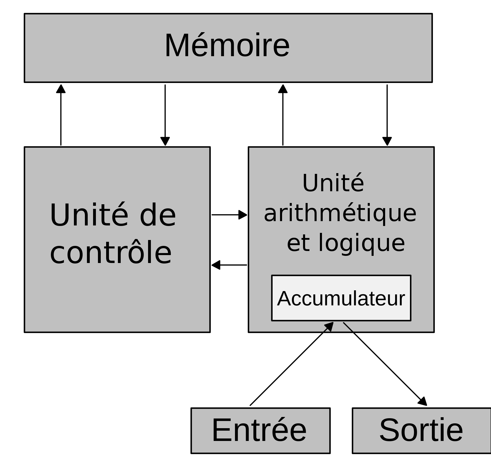
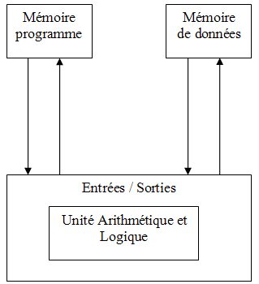

H145 Contact
Les hélicoptères jaune et rouge de la Sécurité civile sont connus du grand public sous le nom de « Dragon ». Ils sont à la disposition des sapeurs-pompiers, mais aussi du SAMU, de la police ou encore la gendarmerie, essentiellement pour accomplir des missions de secours d’urgence et de sauvetage. Hélicoptère "Dragon" de la Sécurité civile Ces appareils, de type EC-145, sont une trentaine en France, réunis dans le groupement d’hélicoptères de la Sécurité civile (GHSC) qui intervient depuis plus de 60 ans. Ils peuvent atteindre les 220km/h, ce qui leur permet d’être très rapidement mobilisés en cas de besoin. L’équipage de chaque hélicoptère est composé d’un pilote et d’un mécanicien opérateur. La cabine peut ensuite accueillir plusieurs professionnels en fonction de l’intervention à effectuer. Bien que les hélicoptères Dragon de la Sécurité civile soient dédiés au secours à personne, ils peuvent occasionnellement remplir des missions d'assistance technique, de police ou de reconnaissance sur les feux de forêts.
John Von Neumann est un mathématicien et physicien hongrois devenu américain en 1937. Il est né le 28 décembre 1903. Il obtient à 22 ans un doctorat en mathématique à l'université de Budapest et en parallèle un diplôme de génie chimique de l'école polytechnique de Zurich. Il contribuera dans sa vie a diverses innovations technologiques : De 1940 à sa mort il sera membre consultatif du Ballistic Research Laboratory et participe à la création de la première bombe nucléaire. Il donnera aussi son nom à une architecture informatique utilisée dans la majorité des ordinateurs modernes. John Von Neumann participera également dans des travaux en logique mathématique et en mécanique quantique. Il meurt finalement le 8 février 1957 à Washington-DC par la cause d’un cancer des os et du pancréas probablement dû à sa forte exposition aux radiations durant ses expériences.
Elle est développée par ce dernier en juin 1945 L’architecture de von Neumann décompose l’ordinateur en 4 parties distinctes :

L’architecture de type Harvard est mise en pratique pour la première fois à l’université Harvard avec le Mark I en 1944.
L’architecture de type Harvard est une conception des processeurs qui sépare physiquement la mémoire de données et la mémoire programme.

Cette dernière est différente de celle de John Von Neumann car le CPU y est connecté au deux mémoires (RAM et ROM) de manière distincte ce qui nécessite davantage de matériel et d'espace. Cela permet à l'architecture d'Harvard d'être plus rapide, cependant il en résulte un gaspillage d'espace car les deux mémoires nécessitent leurs propres espaces, dans l'architecture de Von Neumann l'espace de la mémoire de données peut être utilisé par la mémoire d'instructions et vice-versa.